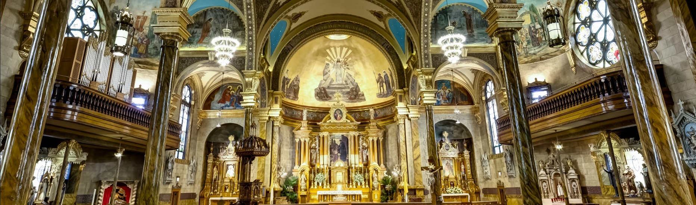

Holy Family Rosaries
"The Rosary, sublime and generous gift of Mary for the elevation, acceleration, and purification of our spiritual life. This gift is a dispensary of the graces of God. Every prayer a flower appreciated along the way. The Rosary should not be merely said but savored and solemnly recited together with our Blessed Mother. We on earth, she in heaven. If daily this is done, we shall ever frustrate the powerless grasp of mortal sin and glorify our Savior and King Jesus Christ."
Naturally, as an entire family of converts, we wanted to be part of something so beautiful, so magnificent in scope. Holy Family Rosaries is a devotion in itself. When you purchase a rosary from us, you are getting more than a prayer-counting device. You are receiving a representation of our devotion and love to God and to the Blessed Virgin Mary, and to the most Holy Rosary within a platform of all the beauty we can summon. If this is the way you see the Rosary and our Blessed Mother, then you find yourself in the right place. Welcome home.